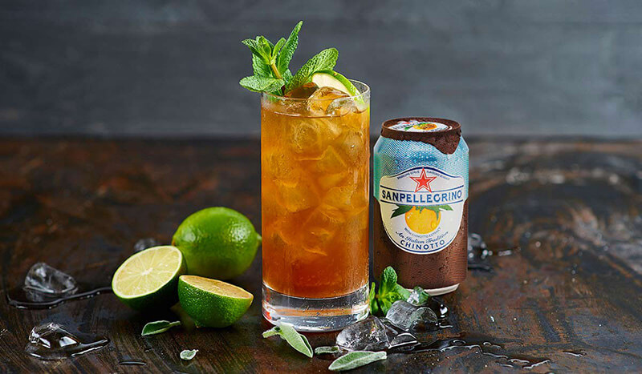

Voluptas
Ресторан итальянской кухни
Италия — это не только родина вкусной еды, но и страна с большим выбором разнообразных напитков. Жители этого региона пьют в течение дня и алкогольные, и безалкогольные напитки.
Наше меню:
Вода
Спирт
Кислоты
Остаточный сахар
Виноград
1.Вино
– Итальянские вина неслучайно занимают лидирующие позиции на мировом рынке алкогольных напитков, ведь качество напитка зависит не только от способа его изготовления, но и от климата, где выращивается виноград. Виноградники в Италии расположены ближе к солнцу, поскольку в стране много холмов и ягоды получают максимум солнечных лучей. Больше всего производится и потребляется красных вин. Каждая область может похвастаться своими сортами. Однако жемчужиной итальянского виноделия считается марка Бароло, производимая в провинции Пьемонт. Вина здесь производятся из сортов винограда «неббиоло», «дольчетто» и «барбера». Однако вина марки Бароло довольно дорогие, но несомненно станут украшением любого стола и будут оценены по достоинству.
Вода;
Глюкозно-фруктозный сироп
Краситель;
Соль — 5 г
Цитрат натрия
2.Chinotto
– напиток, получаемый из одноименного цитрусового фрукта, похожего на шарик для пинг-понга. В XVI веке лигурийский моряк привез ростки этого дерева из Китая (отсюда и название). Чуть позже дерево Кинотто (на русском Чинотто) разрослось по всему Средиземноморью. Нет однозначного мнения о том, кто первый придумал этот напиток. Одни говорят, что уже в 30е года итальянская компания San Pellegrino выпускала кинотто. Другие утверждают, что компания Neri только в 1949 году запустило его производство. В любом случае, в послевоенное время кинотто был уже одним из самых популярных напитков. В меру сладкий, газированный, коричневого цвета и чем-то отдаленно похож на наш лимонад Байкал.
